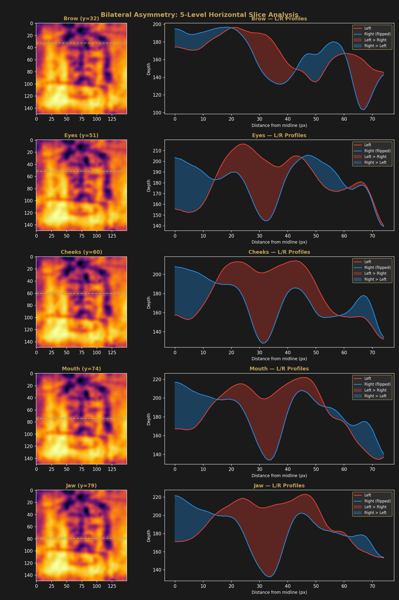
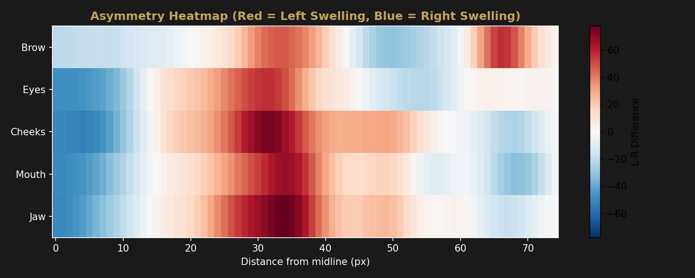
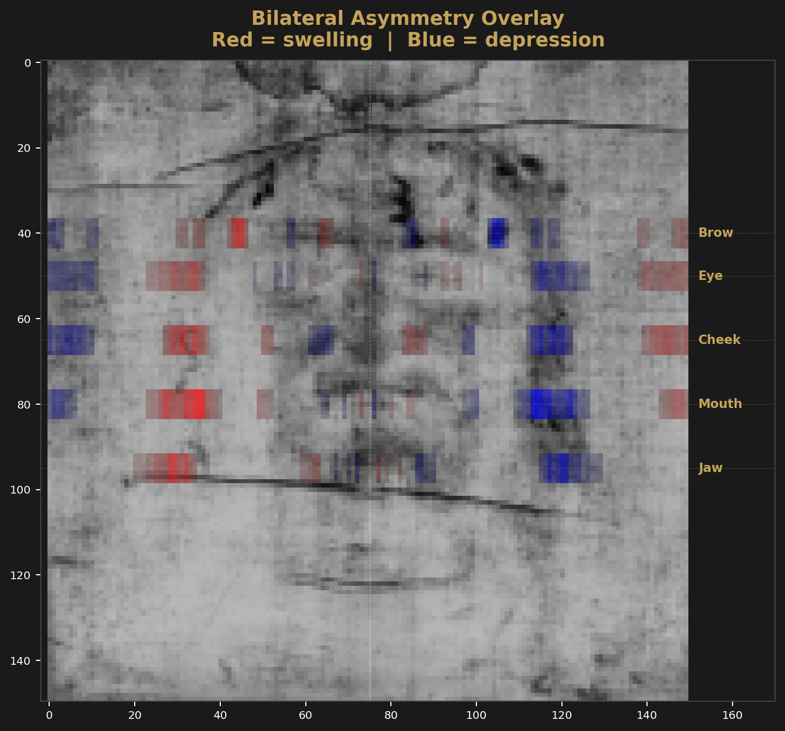

Forensic Analysis
Bilateral Wound Catalog
Systematic left–right comparison at five anatomical levels reveals a consistent asymmetry pattern in the facial depth map.
Method
Five horizontal slices were extracted from the 150×150 Enrie depth map at landmark y-coordinates: brow (y=32), eyes (y=51), cheeks (y=60), mouth (y=74), and jaw (y=79). Each slice averages ±3 rows for noise reduction. The profile is split at the midline (x=75), the left half is compared against the horizontally-flipped right half, and the pixel-wise difference is computed. Positive values indicate the left side is higher (more swollen) than the right.
Slice Results
| Level | Y-Coord | Max Asymmetry | Location (px from midline) | Mean Asymmetry | Direction |
|---|---|---|---|---|---|
| Brow | 32 | 57.29 | 66 | 21.57 | Left |
| Eyes | 51 | 56.71 | 31 | 22.04 | Left |
| Cheeks | 60 | 73.71 | 32 | 30.32 | Left |
| Mouth | 74 | 67.86 | 34 | 25.66 | Left |
| Jaw | 79 | 77.57 | 34 | 26.69 | Left |
All five levels show left-side dominance. The highest max asymmetry (77.57) is at the jaw, while the highest mean asymmetry (30.32) is at the cheek level.
Profile Comparisons

Asymmetry Heatmap

Wound Overlay

Interpretation
The consistent left-side dominance across all five anatomical levels suggests a unilateral trauma pattern. The direction of asymmetry — positive on the left at every level — is consistent with published descriptions of facial trauma on the Shroud image.
The strongest asymmetry concentrates in the mid-to-lower face (cheeks, mouth, jaw), with the jaw showing the single highest asymmetry value (77.57) and the cheeks showing the highest mean asymmetry (30.32).
Limitations
Bilateral asymmetry in a depth map derived from cloth contact could also reflect asymmetric draping, uneven cloth tension, or positional asymmetry of the body beneath the cloth. The asymmetry pattern alone cannot distinguish between trauma and these alternative explanations without additional evidence.